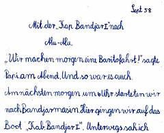
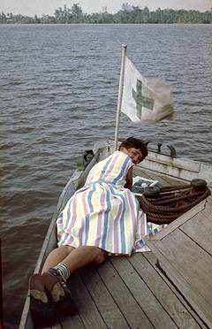

Auf der
Karte
von John Carry (1801) ist der Barito der einzige Fluss, der in Kalimantan nach Süden fließt, aber bis in der Oberlauf sind Ortsnamen eingezeichnet; die Details des Flussverlaufs sind wohl fiktiv. Der Bereich in der Java-See, der vom Barito braun gefärbt wird, ist auf der Karte gestrichelt eingetragen und diente wahrscheinlich als Navigationshilfe.

Dieter berichtet (1958)
"Wir machen morgen eine Baritofahrt!", sagte Papi am Abend. Und so war es auch. Am nächsten morgen um 6 Uhr starteten wir nach Bandjarmasin. Hier gingen wir auf das Boot "Kab. Bandjar I". Unterwegs sah ich viele Maduraprauen und Makassarsegler. Manche lagen sehr tief im Wasser, da sie bis oben vollgepackt waren.
An der Mündung des Barito liegt das Dorf Alu-Alu. Das war unser Ziel. Papi sah sich die neue Poliklinik an. Kurze Zeit blieben wir nur da. Dann fuhren wir wieder Richtung Bandjarmasin. Wir fuhren in einen Nebenfluß des Barito zu dem Dorf Purwosari. Der Name der Ortes klingt eher balinesich oder javanisch. Ob es die in Kalimatan seltenen Orangen hier gab, weil Balinesen im Rahmen der "Transmigrasi" angesiedelt worden waren?
Da bekam ich einen sehr großen Sägefisch geschenkt und einen Korb Djeruk. Dann fuhren wir wieder heim und kamen nachtmittags an.